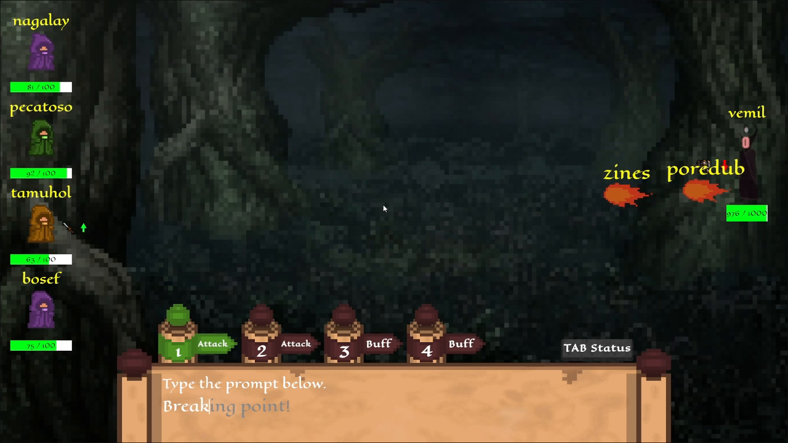
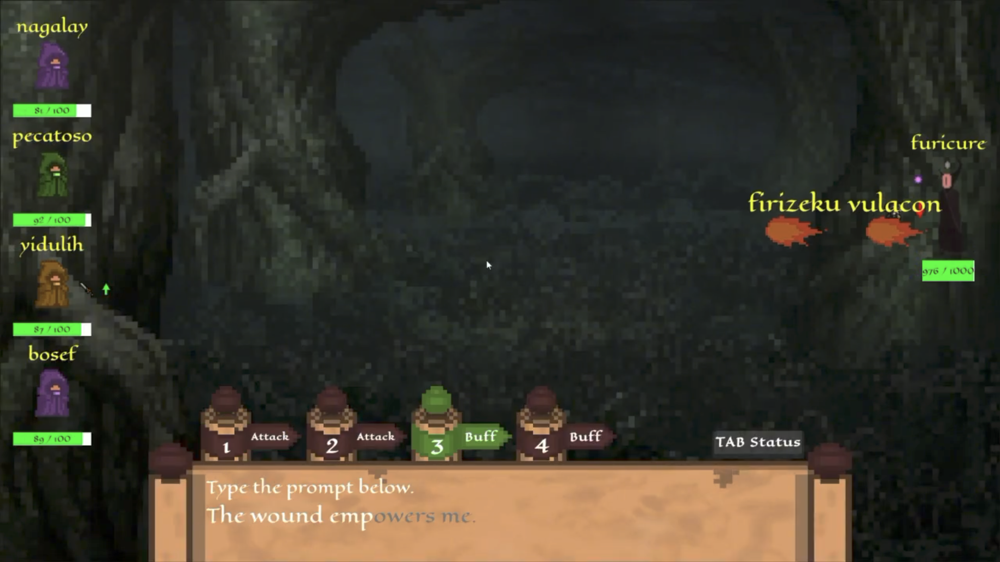

Execution
Speed and accuracy both matter, so stronger typing improves combat output without reducing the system to pure button mashing.
A cooperative combat system where typing performance powers abilities and distinct class roles shape how the team survives together.
Typomancers is a cooperative typing roguelike where players attack, support teammates, and respond to threats by typing prompts during combat.
My main contribution was class and combat systems design: defining four complementary roles, building their passives and abilities, and connecting typing speed and accuracy to combat performance. I also implemented gameplay systems and helped iterate on class balance and combat flow.
The core loop ties typing directly to combat decisions. Players first choose an ability, then type a target word above an ally or enemy, and finally complete a generated prompt to resolve the action. That same input layer is also used to destroy incoming word projectiles.

Speed and accuracy both matter, so stronger typing improves combat output without reducing the system to pure button mashing.
Typing the word above a character selects which ally or enemy receives the chosen ability.
After choosing a target, players complete a generated sentence to deliver the attack, heal, buff, or debuff.
Run modifiers can alter prompts and combat values, such as capitalizing letters, doubling or removing letters, and changing damage, healing, or projectile speed.
I designed the class set so each role supports a different way of contributing to combat. Their abilities and passives create clear strengths, while overlap between roles gives the team room to recover when something goes wrong.
Defining mechanic: Attacks leech a portion of damage dealt.
Defining mechanic: Destroying projectiles charges a stronger next attack.
Defining mechanic: Healing is stronger on low-health allies.
Defining mechanic: Buffs applied to allies also affect the caster.
I designed the team dynamic so cooperation comes from ability interaction rather than just assigning labels. The interesting moments happen when one player sets up an opening and another converts it into damage, sustain, or safety.

The Enchanter can create stronger damage windows for the DPS through buffs and debuffs.
The Healer keeps the team alive while the All-Rounder fills whatever role is currently under pressure.
Flexible utility lets the team compensate when one class is busy, low on health, or dealing with another threat.
Because abilities can target allies or enemies, players constantly decide who needs support and which threat should be prioritized.
Typomancers reinforced that typing skill works best when it affects more than raw damage. Targeting, prompt execution, class abilities, and roguelike modifiers all create different pressures that players have to solve together.
Speed and accuracy matter more when they influence who to target, when to commit to an ability, and how safely the team can respond under pressure.
A class feels meaningful when its strengths change what teammates can do, not just when it has different numbers or buttons.
Target words, prompts, class abilities, and roguelike modifiers become more interesting when they influence one another instead of operating as separate mechanics.